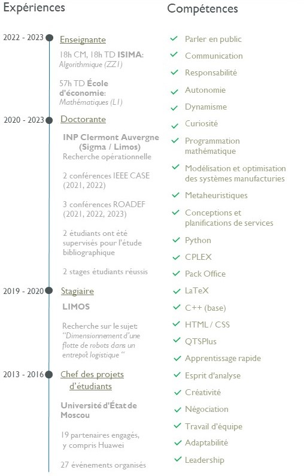

Je me caractérise comme chercheuse et entrepreneuse
Comme vous pouvez le voir dans la section Formation, j'ai de l'expérience d'étudier/travailler dans différents pays: en Russie, en France, en Angleterre, j'ai également fait un exposé au Mexique et, en tant que loisirs, j'ai visité plus de 10 pays dans différentes parties du monde.
L’expérience, ce n'est pas ce qui fait de nous qui nous sommes, mais ceux qui est autour de nous et ce que nous avons surmonté. Les difficultés de la vie nous rendent plus forts et grâce à elles et au soutien des proches, je suis qui je suis. Quelques faits de ma vie :
- 1. À l'âge de 16 ans, j'ai quitté la maison de mes parents pour une capitale à 8 000 km, où je vivais seule, pour étudier au lycée de mathématiques et de physique.
- 2. Un an plus tard, je suis entrée dans l’une des meilleures université du pays, après avoir réussi le concours et reçu une place budgétaire (une bourse).
- 3. J'ai commencé à être autonome de mes parents financièrement à 18 ans.
- 4. Je suis diplômée de l’université avec mention excellente.
- 5. J'ai commencé à voyager sans connaître l'anglais, sans connaître d'autre langue que ma langue maternelle.
- 6. Je suis venue en France où je ne connaissais personne, j'avais de l'argent pour quelques mois, mon niveau de français était très élémentaire et je n'avais même pas de visa étudiant mais dans un an j'ai obtenu mon diplôme dans la première moitié du classement.
Beaucoup d'autres choses resteront derrière l'écran, cependant, voici quelque chose qui montre ma détermination, ma responsabilité, mon courage. Je peux en parler bien sûr seulement grâce au fait que j'ai des parents adorables qui me soutiennent et à la chance que je suis entourée de gens formidables qui m'aident beaucoup.
-
Expériences et Сompétences

-
Formations
-

E-mail :
prenom.nom@imt-atlantique.fr
Articles
- 2023 ROADEF 24ème congrès annuel de la Société Française de Recherche Opérationnelle et d'Aide à la Décision
- 2022 IEEE 18th International Conference on Automation Science and Engineering
(CASE) - 2022 ROADEF 23ème congrès annuel de la Société Française de Recherche Opérationnelle et d'Aide à la Décision
- 2021 IEEE 17th International Conference on Automation Science and Engineering (CASE)
- 2021 ROADEF 22ème congrès de la société Française de Recherche Opérationnelle et d’Aide à la Décision
- Minimisation du nombre de robots coopératifs et reconfigurables pour le transport de charges hétérogènes/a>
- Sizing of a fleet of cooperative and reconfigurable robots for the transport of heterogeneous loads
- Dimensionnement d'une flotte de robots coopératifs et reconfigurables pour le transport de charges hétérogènes
- Sizing of a fleet of cooperative robots for the transport of homogeneous loads
- Dimensionnement d’une flotte de robots coopératifs pour le transport de charges homogènes